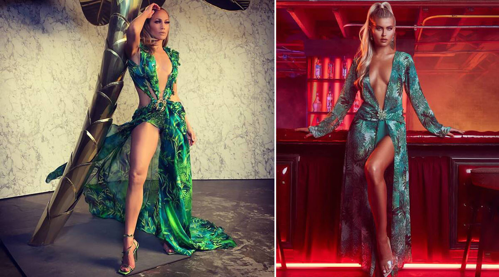
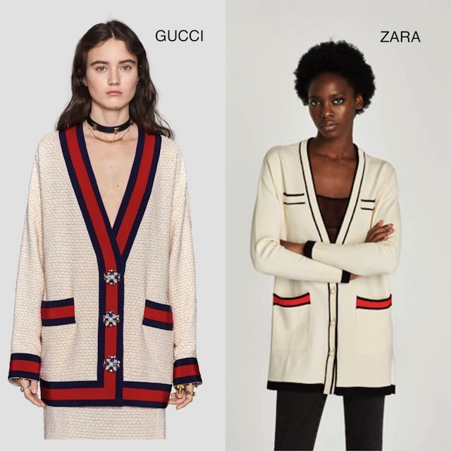

Comparison

Fashion Nova vs Versace
In 2019, Versace sued popular fast-fashion brand, Fashion Nova for copying its designs. Fashion Nova has a history of copying designer brands’ clothing. The photo on the left is of Jennifer Lopez’s iconic 2000 Grammy Awards dress designed by Versace. In 2019, the dress made a comeback, causing the public wanting to get their hands on it. Fashion Nova took matters into their own hands and produced an identical dress and sold it for only $70 USD when the original Versace dress is somewhere around $5,000 USD.

Gucci vs Zara
In 2017, Gucci came out with this oversized cardigan that dominated the fashion world. The cardigan was sold retail for around $2,000 USD. Zara quickly came out with an almost identical version of the cardigan for $60 USD